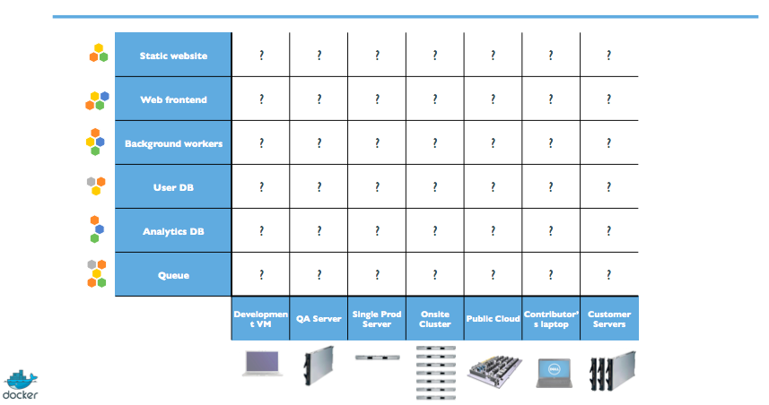
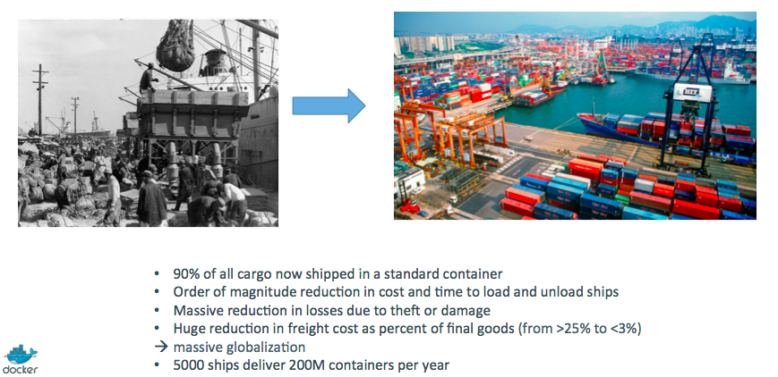

Intro to Docker
Lviv University
Docker overview
Why now?
Before
- monolithic applications
- long development cycles
- single environment
- slowly scaling up
Now:
- decoupled services
- fast, iterative improvements
- multiple environments
- quickly scaling out
VMs
Description
- Virtual machines emulate physical computers by running operating systems in isolated instances.
- Multiple VMs are commonly hosted on a single server, with a hypervisor acting as a lightweight software layer positioned between the physical host and the VMs.
- This hypervisor efficiently manages access to resources, enabling virtual machines to function as distinct servers while offering enhanced flexibility and agility.
- Gained popularity in the 2000s due to consolidation and cost saving initiatives
Containers
Description
- A container is an isolated, lightweight silo for running an application on the host operating system.
- Containers build on top of the host operating system’s kernel
- Containers contain only apps and some lightweight operating system APIs and services
VMs vs Containers

Deployment
Complexity
Many different stacks:
- languages
- frameworks
- databases
Many different targets:
- individual development environments
- pre-production, QA, staging…
- production: on prem, cloud, hybrid
Deployment

Deployment
Deployment

Deployment

Deployment
Deployment

Deployment
Deployment

Docker
Results
- Dev-to-prod reduced from 9 months to 15 minutes (ING)
- Continuous integration job time reduced by more than 60% (BBC)
- Deploy 100 times a day instead of once a week (GILT)
- 70% infrastructure consolidation (MetLife)
Docker
How to deploy now?
Escape dependency hell:
- Write installation instructions into an
INSTALL.txtfile - Using this file, write an
install.shscript that works for you - Turn this file into a
Dockerfile, test it on your machine - If the Dockerfile builds on your machine, it will build anywhere
- Rejoice as you escape dependency hell and “works on my machine”
- Never again “worked in dev - ops problem now!”
Docker
How to deploy now?
Quick onboarding
- Write Dockerfiles for your application components
- Use pre-made images from the Docker Hub (mysql, redis…)
- Describe your stack with a Compose file
- On-board somebody with two commands:
git clone ...
docker-compose upDocker
Implement reliable CI easily
- Build test environment with a Dockerfile or Compose file
- For each test run, stage up a new container or stack
- Each run is now in a clean environment
- No pollution from previous tests
Docker
Use container images as build artefacts
- Build your app from Dockerfiles
- Store the resulting images in a registry
- Keep them forever (or as long as necessary)
- Test those images in QA, CI, integration…
- Run the same images in production
- Something goes wrong? Rollback to previous image
- Investigating old regression? Old image has your back!
- Images contain all the libraries, dependencies, etc. needed to run the app.
Docker: Formats
Before
- No standardized exchange format.
- Containers are hard to use for developers.
- As a result, they are hidden from the end users.
- No re-usable components, APIs, tools.
After
- Standardize the container format, because containers were not portable.
- Make containers easy to use for developers.
- Emphasis on re-usable components, APIs, ecosystem of standard tools.
- Improvement over ad-hoc, in-house, specific tools.
Docker: Deployment
Before
- Ship packages: deb, rpm, gem, jar, homebrew…
- Dependency hell.
- “Works on my machine.”
- Base deployment often done from scratch and unreliable.
After
- Ship container images with all their dependencies.
- Images are bigger, but they are broken down into layers.
- Only ship layers that have changed.
- Save disk, network, memory usage.
Docker
Example
Layers:
- CentOS
- JRE
- Tomcat
- Dependencies
- Application JAR
- Configuration
Docker: Devops
Before
- Drop a tarball (or a commit hash) with instructions.
- Dev environment very different from production.
- Ops don’t always have a dev environment themselves …
- … and when they do, it can differ from the devs’.
- Ops have to sort out differences and make it work …
- … or bounce it back to devs.
- Shipping code causes frictions and delays.
After
- Drop a container image or a Compose file.
- Ops can always run that container image.
- Ops can always run that Compose file.
- Ops still have to adapt to prod environment, but at least they have a reference point.
- Ops have tools allowing to use the same image in dev and prod.
- Devs can be empowered to make releases themselves more easily.
Docker history

Docker history
dotCloud
- dotCloud was operating a PaaS, using a custom container engine.
- This engine was based on OpenVZ (and later, LXC) and AUFS.
- It started (circa 2008) as a single Python script.
- By 2012, the engine had multiple (~10) Python components. (and ~100 other micro-services!)
- End of 2012, dotCloud refactors this container engine.
- The codename for this project is “Docker.”
Docker history
First public release
- March 2013, PyCon, Santa Clara:
- “Docker” is shown to a public audience for the first time.
- It is released with an open source license.
- Very positive reactions and feedback!
- The dotCloud team progressively shifts to Docker development.
- The same year, dotCloud changes name to Docker.
Docker history
After release
- 2013: fixing bugs around OS support
- 2014: Docker Compose v1 (written in Python)
- 2015: version 1.0, Open Containers Initiative
- 2015: creation of the Cloud Native Computing Foundation
- 2020: Docker Compose v2 (re-written in Go)
containerd

Installation
Docker installation
What is Docker?
- “Installing Docker” really means “Installing the Docker Engine and CLI”.
- The Docker Engine is a daemon (a service running in the background).
- This daemon manages containers, the same way that a hypervisor manages VMs.
- We interact with the Docker Engine by using the Docker CLI.
- The Docker CLI and the Docker Engine communicate through an API.
- There are many other programs and client libraries which use that API.
Docker installation
Docker Desktop
- Leverages the host OS virtualization subsystem
- Under the hood, runs a tiny VM
- Accesses network resources like normal applications
- Supports filesystem sharing through volumes
Docker installation
Docker Desktop
When you execute docker version from the terminal:
- the CLI connects to the Docker Engine over a standard socket,
- the Docker Engine is, in fact, running in a VM,
- … but the CLI doesn’t know or care about that,
- the CLI sends a request using the REST API,
- the Docker Engine in the VM processes the request,
- the CLI gets the response and displays it to you.
Docker installation
Check that it works
$ docker version
Client:
Version: 28.2.2
API version: 1.50
Go version: go1.24.3
Git commit: e6534b4
Built: Fri May 30 12:07:35 2025
OS/Arch: darwin/arm64
Context: desktop-linux
Server: Docker Desktop 4.42.1 (196648)
Engine:
Version: 28.2.2
API version: 1.50 (minimum version 1.24)
Go version: go1.24.3
Git commit: 45873be
Built: Fri May 30 12:07:27 2025
OS/Arch: linux/arm64
Experimental: false
containerd:
Version: 1.7.27
GitCommit: 05044ec0a9a75232cad458027ca83437aae3f4da
runc:
Version: 1.2.5
GitCommit: v1.2.5-0-g59923ef
docker-init:
Version: 0.19.0
GitCommit: de40ad0
Docker installation: Busybox

What is it?
- provides several Unix utilities in a single executable file.
- very space-efficient
- created for embedded operating systems with very limited resources.
Check that it works
$ docker run busybox echo hello world
Unable to find image 'busybox:latest' locally
latest: Pulling from library/busybox
499bcf3c8ead: Pull complete
Digest: sha256:d82f458899c9696cb26a7c02d5568f81c8c8223f8661bb2a7988b269c8b9051e
Status: Downloaded newer image for busybox:latest
hello worldInteractive containers
Docker installation: Ubuntu
Running Ubuntu
$ docker run -it ubuntu
Unable to find image 'ubuntu:latest' locally
latest: Pulling from library/ubuntu
59a5d47f84c3: Pull complete
Digest: sha256:353675e2a41babd526e2b837d7ec780c2a05bca0164f7ea5dbbd433d21d166fc
Status: Downloaded newer image for ubuntu:latest
root@014ed1f2eac1:/# sudo apt-get moo
bash: sudo: command not found
root@014ed1f2eac1:/# apt-get moo
(__)
(oo)
/------\/
/ | ||
* /\---/\
~~ ~~
..."Have you mooed today?"...
root@014ed1f2eac1:/#Docker installation: Ubuntu
What does this mean?
- It runs a bare-bones, no-frills ubuntu system.
-itis shorthand for -i -t.-itells Docker to connect us to the container’sstdin.: e.g. interactive mode.-ttells Docker that we want a pseudo-terminal.
Docker installation: Ubuntu
Run something
root@014ed1f2eac1:/# figlet hello
bash: figlet: command not found
root@014ed1f2eac1:/# apt-get update && apt-get install figlet
Reading package lists... Done
Building dependency tree... Done
Reading state information... Done
The following NEW packages will be installed:
figlet
...
Unpacking figlet (2.2.5-3) ...
root@014ed1f2eac1:/# figlet hello
_ _ _
| |__ ___| | | ___
| '_ \ / _ \ | |/ _ \
| | | | __/ | | (_) |
|_| |_|\___|_|_|\___/
root@014ed1f2eac1:/#Docker installation: Ubuntu
Important
Exit the container via exit or Ctrl-D.
If we try running figlet again, this won’t work - it’s only installed inside the container.
Docker installation: Ubuntu
Hosts vs Containers
- We ran an ubuntu container on an Linux/Windows/macOS host.
- They have different, independent packages.
- Installing something on the host doesn’t expose it to the container.
- And vice-versa.
- Even if both the host and the container have the same Linux distro!
- We can run any container on any host.
Docker
Where’s our container now
- in a stopped state
- using disk storage
- NOT using CPU or memory
Docker
Start a new container
docker run -it ubuntu
root@5c6dc90eb867:/# figlet
bash: figlet: command not found
root@5c6dc90eb867:/#Why?
- We started a brand new container.
- The basic Ubuntu image was used, and figlet is not here.
Docker
Can we restore our container somehow?
We can, but that’s not the default workflow with Docker.
What’s the default workflow, then?
- Always start with a fresh container.
- If we need something installed in our container, build a custom image.
Why so complicated?
- It’s quite easy actually
- This puts a strong emphasis on automation and repeatability. Let’s see why …
Docker
Docker
Pets
- have distinctive names and unique configurations
- when they have an outage, we do everything we can to fix them
Cattle
- have generic names (e.g. with numbers) and generic configuration
- configuration is enforced by configuration management, golden images …
- when they have an outage, we can replace them immediately with a new server
Docker
Pet VM
When we use local VMs (with e.g. VirtualBox or VMware), our workflow looks like this:
- create VM from base template (Ubuntu, CentOS…)
- install packages, set up environment
- work on project
- when done, shut down VM
- next time we need to work on project, restart VM as we left it
- if we need to tweak the environment, we do it live
- Over time, the VM configuration evolves, diverges.
- We don’t have a clean, reliable, deterministic way to provision that environment.
Docker
Cattle container
With Docker, the workflow looks like this:
- create container image with our dev environment
- run container with that image
- work on project
- when done, shut down container
- next time we need to work on project, start a new container
- if we need to tweak the environment, we create a new image
- We have a clear definition of our environment, and can share it reliably with others.
Background containers
Docker
Non-interactive containers
Our first containers were interactive.
We will now see how to:
- Run a non-interactive container.
- Run a container in the background.
- List running containers.
- Check the logs of a container.
- Stop a container.
- List stopped containers.
Non-interactive containers
Example
We will run a small custom container. This container just displays the time every second.
$ docker run jpetazzo/clock
Unable to find image 'jpetazzo/clock:latest' locally
latest: Pulling from jpetazzo/clock
36fbfd22ebfc: Pull complete
Digest: sha256:dc06bbc3744f7200404bff0bbb2516925e7adea115e07de9da8b36bf15fe3dd3
Status: Downloaded newer image for jpetazzo/clock:latest
Sat Sep 20 11:00:45 UTC 2025
Sat Sep 20 11:00:46 UTC 2025
Sat Sep 20 11:00:47 UTC 2025
^C%- This container will run forever.
- To stop it, press ^C.
- Docker has automatically downloaded the image jpetazzo/clock.
- This image is a user image, created by
jpetazzo.
Non-interactive containers
Ctrl-C might now always work!
What happens when we hit Ctrl-C:
- SIGINT gets sent to the container, which means:
- SIGINT gets sent to PID 1 (default case)
- SIGINT gets sent to foreground processes when running with -ti
But there is a special case for PID 1: it ignores all signals!
- except SIGKILL and SIGSTOP
- except signals handled explicitly
TL,DR: there are many circumstances when Ctrl-C won’t stop the container.
Non-interactive containers
Why is PID 1 special?
PID 1 has some extra responsibilities:
- it starts (directly or indirectly) every other process
- when a process exits, its processes are “reparented” under PID 1
- When PID 1 exits, everything stops:
- on a “regular” machine, it causes a kernel panic
- in a container, it kills all the processes
Ergo: We don’t want PID 1 to stop accidentally. That’s why it has these extra protections.
Non-interactive containers
Solution

Non-interactive containers
Daemon mode
Containers can be started in the background, with the -d flag (daemon mode):
$ docker run -d jpetazzo/clock
896ffc453901fc7d7c417381c8bde9a8911182d07b819dc988aa0b4d1c298d3e- We don’t see the output of the container.
- But don’t worry: Docker collects that output and logs it!
- Docker gives us the ID of the container.
Non-interactive containers
Maxwell demon: MIT’s Project MAC

Non-interactive containers
List running containers
How can we check that our container is still running?
With docker ps, just like the UNIX ps command, lists running processes.
$ docker ps
CONTAINER ID IMAGE COMMAND CREATED STATUS PORTS NAMES
896ffc453901 jpetazzo/clock "/bin/sh -c 'while d…" 5 minutes ago Up 5 minutes quirky_wilson
Docker tells us:
- The (truncated) ID of our container.
- The image used to start the container.
- That our container has been running (Up) for a couple of minutes.
- Other information (COMMAND, PORTS, NAMES) that we will explain later.
Non-interactive containers
More containers
Run 2 more:
$ docker run -d jpetazzo/clock
42518eae35544162179d3f7086410949256a767244e36e40518f0f9d1dd223ae
$ docker run -d jpetazzo/clock
31a2d9cc7e40d58280b9e5cdd6135cf824559bc1ab6409f026c3a0c82419273eCheck running:
$ docker ps
CONTAINER ID IMAGE COMMAND CREATED STATUS PORTS NAMES
31a2d9cc7e40 jpetazzo/clock "/bin/sh -c 'while d…" 30 seconds ago Up 29 seconds optimistic_payne
42518eae3554 jpetazzo/clock "/bin/sh -c 'while d…" 31 seconds ago Up 30 seconds beautiful_kalam
896ffc453901 jpetazzo/clock "/bin/sh -c 'while d…" 7 minutes ago Up 7 minutes quirky_wilsonNon-interactive containers
Last run container
$ docker ps -l
CONTAINER ID IMAGE COMMAND CREATED STATUS PORTS NAMES
31a2d9cc7e40 jpetazzo/clock "/bin/sh -c 'while d…" About a minute ago Up About a minute optimistic_payneIDs only
$ docker ps -q
31a2d9cc7e40
42518eae3554
896ffc453901Non-interactive containers
Container logs
$ docker logs 31a
...
...
...
Sat Sep 20 11:18:46 UTC 2025
Sat Sep 20 11:18:47 UTC 2025
Sat Sep 20 11:18:48 UTC 2025
Sat Sep 20 11:18:49 UTC 2025
Sat Sep 20 11:18:50 UTC 2025
Sat Sep 20 11:18:51 UTC 2025
Sat Sep 20 11:18:52 UTC 2025
Sat Sep 20 11:18:53 UTC 2025
Sat Sep 20 11:18:54 UTC 2025
Sat Sep 20 11:18:55 UTC 2025
Sat Sep 20 11:18:56 UTC 2025
Sat Sep 20 11:18:57 UTC 2025
Sat Sep 20 11:18:58 UTC 2025
Sat Sep 20 11:18:59 UTC 2025
Sat Sep 20 11:19:00 UTC 2025
All logs are dumped - a bit too much.
Non-interactive containers
Container logs tail
$ docker logs --tail 5 31a
Sat Sep 20 11:19:55 UTC 2025
Sat Sep 20 11:19:56 UTC 2025
Sat Sep 20 11:19:57 UTC 2025
Sat Sep 20 11:19:58 UTC 2025
Sat Sep 20 11:19:59 UTC 2025Container logs tail & follow
$ docker logs --tail 1 --follow 31a
Sat Sep 20 11:21:45 UTC 2025
Sat Sep 20 11:21:46 UTC 2025
Sat Sep 20 11:21:47 UTC 2025
Sat Sep 20 11:21:48 UTC 2025
Sat Sep 20 11:21:49 UTC 2025
Non-interactive containers
Stopping
There are two ways we can terminate our detached container.
- Killing it using the
docker killcommand.- stops the container immediately, by using the KILL signal.
- Stopping it using the
docker stopcommand.- sends a TERM signal, and after 10 seconds, if the container has not stopped, it sends KILL.
Reminder: the KILL signal cannot be intercepted, and will forcibly terminate the container.
Non-interactive containers
Stopping: Example
$ docker stop 31a
<10 seconds pass>
31a- Docker sends the TERM signal;
- the container doesn’t react to this signal (it’s a simple Shell script with no special signal handling);
- 10 seconds later, since the container is still running, Docker sends the KILL signal;
- this terminates the container.
Non-interactive containers
Killing: Example
$ docker kill 425 896
425
896Those containers will be terminated immediately (without the 10-second delay).
Non-interactive containers
List stopped containers
We can also see stopped containers, with the -a (–all) option.
$ docker ps -a
CONTAINER ID IMAGE COMMAND CREATED STATUS PORTS NAMES
31a2d9cc7e40 jpetazzo/clock "/bin/sh -c 'while d…" 12 minutes ago Exited (137) 2 minutes ago optimistic_payne
42518eae3554 jpetazzo/clock "/bin/sh -c 'while d…" 12 minutes ago Exited (137) About a minute ago beautiful_kalam
896ffc453901 jpetazzo/clock "/bin/sh -c 'while d…" 19 minutes ago Exited (137) About a minute ago quirky_wilson
74b84530ad71 jpetazzo/clock "/bin/sh -c 'while d…" 26 minutes ago Exited (130) 26 minutes ago amazing_cohen
5c6dc90eb867 ubuntu "/bin/bash" 40 minutes ago Exited (130) 26 minutes ago thirsty_bardeen
014ed1f2eac1 ubuntu "/bin/bash" 52 minutes ago Exited (0) 40 minutes ago elated_darwin
42f574fdf1af busybox "echo hello world" About an hour ago Exited (0) About an hour ago suspicious_franklin
Restarting and attaching to containers
Restarting and attaching
Background vs foreground
- The distinction between foreground and background containers is arbitrary.
- From Docker’s point of view, all containers are the same.
- All containers run the same way, whether there is a client attached to them or not.
- It is always possible to detach from a container, and to reattach to a container.
- Analogy: attaching to a container is like plugging a keyboard and screen to a physical server.
Restarting and attaching
Detaching from containers
If you have started an interactive container (with option -it), you can detach from it.
The “detach” sequence is Ctrl-P Ctrl-Q or Ctrl-C on Windows.
Otherwise you can detach by killing the Docker client.
Restarting and attaching
Custom detach
You can change the sequence with docker run --detach-keys.
This can also be passed as a global option to the engine.
Start a container with a custom detach command:
$ docker run -ti --detach-keys ctrl-x,x jpetazzo/clockDetach by hitting Ctrl-X x.
$ docker ps -lRestarting and attaching
Attaching
You can attach to a container:
$ docker attach <containerID>The container must be running.
There can be multiple clients attached to the same container.
If you don’t specify --detach-keys when attaching, it defaults back to Ctrl-P Ctrl-Q.
Try it on our previous container:
$ docker attach $(docker ps -lq)Restarting and attaching
Detaching from non-interactive containers
Warning: if the container was started without -it..., you won’t be able to detach with Ctrl-P Ctrl-Q. If you hit Ctrl-C, the signal will be proxied to the container.
Remember: you can always detach by killing the Docker client.
Restarting and attaching
Restarting a container
When a container has exited, it is in stopped state.
It can then be restarted with the start command.
$ docker start <yourContainerID>The container will be restarted using the same options you launched it with.
You can re-attach to it if you want to interact with it:
$ docker attach <yourContainerID>Use docker ps -a to identify the container ID of a previous jpetazzo/clock container, and try those commands.
Docker Images
Docker Images
Outline
What we will go through now:
- What is an image.
- What is a layer.
- The various image namespaces.
- How to search and download images.
- Image tags and when to use them.
Docker Images
What is an image?
- Image = files + metadata
- These files form the root filesystem of our container.
- The metadata can indicate a number of things, e.g.:
- the author of the image
- the command to execute in the container when starting it
- environment variables to be set
- etc.
- Images are made of layers, conceptually stacked on top of each other.
- Each layer can add, change, and remove files and/or metadata.
- Images can share layers to optimize disk usage, transfer times, and memory use.
Docker Images
Docker Image Example: Website
The images will contain these layers:
- CentOS base layer
- Packages and configuration files added by our local IT
- Python installation
- Flask/Django
- Our application’s dependencies
- Our application code and assets
- Our application configuration
Note
App config is generally added by orchestration facilities.
Docker Images
Read-write layer
Exists on top of image layers.

Docker Images
Containers vs Images
- an image is a read-only filesystem.
- a container is an encapsulated set of processes,
- running in a read-write copy of that filesystem.
- to optimize container boot time, copy-on-write is used instead of regular copy.
- docker run starts a container from a given image.
Docker Images

Docker Images
Compared to Python objects/classes
- Images are conceptually similar to classes.
- Layers are conceptually similar to inheritance.
- Containers are conceptually similar to instances.
Docker Images
How do change read-only images?
If an image is read-only, how do we change it?
- We don’t.
- We create a new container from that image.
- Then we make changes to that container.
- When we are satisfied with those changes, we transform them into a new layer.
- A new image is created by stacking the new layer on top of the old image.
Docker Images
How do we create empty images?
There is a special empty image called
scratch.
It allows to build from scratch.The
docker importcommand loads a tarball into Docker.
The imported tarball becomes a standalone image.
That new image has a single layer.
Note: you will probably never have to do this yourself.
Docker Images
How do we create other images?
docker commit
- Saves all the changes made to a container into a new layer.
- Creates a new image (effectively a copy of the container).
Another option
docker build (used 99% of the time)
- Performs a repeatable build sequence.
- This is the preferred method!
Docker Images
Image namespaces
Images have names, and these names can belong to three namespaces:
- Official images (root namespace)
e.g. ubuntu, busybox …
- User (and organizations) images (user namespace)
e.g. jpetazzo/clock
- Self-hosted images (self-hosted namespace)
e.g. registry.example.com:5000/my-private/image
Docker Images
Root namespace
- The root namespace is for official images.
- They are gated by Docker Inc.
- They are generally authored and maintained by third parties.
- Those images include:
- Small, “swiss-army-knife” images like
busybox. - Distro images to be used as bases for your builds, like
ubuntu,fedora... - Ready-to-use components and services, like
redis,postgresql...
Docker Images
User namespace
The user namespace holds images for Docker Hub users and organizations. For example:
jpetazzo/clock
The Docker Hub user is:
jpetazzo
The image name is:
clock
Docker Images
Self-hosted namespace
This namespace holds images which are not hosted on Docker Hub, but on third party registries.
They contain the hostname (or IP address), and optionally the port, of the registry server.
For example:
localhost:5000/wordpress
localhost:5000is the host and port of the registrywordpressis the name of the image
Other examples:
quay.io/coreos/etcd
gcr.io/google-containers/hugoDocker Images
Image storage
Images can be stored:
- On your Docker host.
- In a Docker registry.
You can use the Docker client to download (pull) or upload (push) images.
Docker Images
Current images
$ docker images
REPOSITORY TAG IMAGE ID CREATED SIZE
ubuntu latest 353675e2a41b 11 days ago 139MB
mongo latest a6bda40d00e5 8 weeks ago 1.19GB
mysql 8.0 18dee92bbc23 2 months ago 1.06GB
bitnami/redis latest 5927ff3702df 2 months ago 253MB
postgres 14 563a4985838f 3 months ago 623MB
node 18.20.5 8b7f2b36c945 10 months ago 1.56GB
busybox latest d82f458899c9 11 months ago 6.21MB
mysql 8.0.35 c6812f0dcd97 21 months ago 809MB
postgres 11-alpine ea50b9fd617b 21 months ago 337MB
node 16 f77a1aef2da8 2 years ago 1.27GB
maven 3-openjdk-11 805f366910ae 3 years ago 1.03GB
jpetazzo/clock latest dc06bbc3744f 4 years ago 2.32MBDocker Images
Image search
We cannot list all images on a remote registry, but we can search for a specific keyword:
$ docker search jupyter
NAME DESCRIPTION STARS OFFICIAL
islasgeci/jupyter Jupyter para Ciencia de Datos • GECI 0
opendatacube/jupyter An image with OpenDataCube and Jupyter 1
datajoint/jupyter **Deprecated**: Official DataJoint Jupyter n… 0
jupyter/scipy-notebook Scientific Jupyter Notebook Python Stack fro… 467
jupyter/all-spark-notebook Python, Scala, R and Spark Jupyter Notebook … 439
jupyter/pyspark-notebook Python and Spark Jupyter Notebook Stack from… 316
jupyter/tensorflow-notebook Scientific Jupyter Notebook Python Stack w/ … 372
biocontainers/jupyter 0
jupyter/datascience-notebook Data Science Jupyter Notebook Python Stack f… 1092
jupyter/minimal-notebook Minimal Jupyter Notebook Python Stack from h… 199
jupyter/base-notebook Base image for Jupyter Notebook stacks from … 237
jupyter/nbviewer Jupyter Notebook Viewer 34
jupyter/r-notebook R Jupyter Notebook Stack from https://github… 62
jupyter/repo2docker Turn git repositories into Jupyter enabled D… 22
jupyter/docker-stacks-foundation Tiny base image on which Jupyter apps can be… 6
jupyter/demo (DEPRECATED) Demo of the IPython/Jupyter Not… 16
jupyter/julia-notebook Julia Jupyter Notebook Stack from https://gi… 4
- Stars indicate the popularity of the image.
- Official images are those in the root namespace.
Docker Images
Downloading images
There are two ways to download images.
- Explicitly, with
docker pull. - Implicitly, when executing
docker runand the image is not found locally.
Docker Images
Pulling an image
$ docker pull debian:jessie
jessie: Pulling from library/debian
f24aff4096a5: Pull complete
Digest: sha256:32ad5050caffb2c7e969dac873bce2c370015c2256ff984b70c1c08b3a2816a0
Status: Downloaded newer image for debian:jessie
docker.io/library/debian:jessie- As seen previously, images are made up of layers.
- Docker has downloaded all the necessary layers.
- In this example,
:jessieindicates which exact version of Debian we would like.
It is a version tag.
Docker Images
Image tags
Images can have tags.
- Tags define image versions or variants.
docker pull ubuntuwill refer to ubuntu:latest.- The
:latesttag is generally updated often.
Docker Images
Don’t specify tags:
- When doing rapid testing and prototyping.
- When experimenting.
- When you want the latest version.
Do specify tags:
- When recording a procedure into a script.
- When going to production.
- To ensure that the same version will be used everywhere.
- To ensure repeatability later.
- This is similar to what we would do with
pip install,npm install, etc.
Docker Images
Multi-arch images
An image can support multiple architectures
More precisely, a specific tag in a given repository can have either:
- a single manifest referencing an image for a single architecture
- a manifest list (or fat manifest) referencing multiple images
In a manifest list, each image is identified by a combination of:
- os (linux, windows)
- architecture (amd64, arm, arm64…)
- optional fields like variant (for arm and arm64), os.version (for windows)
Docker Images
Working with multi-arch images
The Docker Engine will pull “native” images when available (images matching its own os/architecture/variant)
We can ask for a specific image platform with
--platformThe Docker Engine can run non-native images thanks to QEMU+binfmt (automatically on Docker Desktop; with a bit of setup on Linux)
Building images interactively
Building images interactively
What we will do
We will create our first container image. It will be a basic distribution image, but we will pre-install the package figlet.
We will:
- Create a container from a base image.
- Install software manually in the container, and turn it into a new image.
- Learn about new commands:
- docker commit
- docker tag
- and docker diff.
Building images interactively
Plan
- Create a container (with
docker run) using our base distro of choice. - Run a bunch of commands to install and set up our software in the container.
- (Optionally) review changes in the container with
docker diff. - Turn the container into a new image with
docker commit. - (Optionally) add tags to the image with
docker tag.
Building images interactively
Setting up container
- Start an Ubuntu container:
$ docker run -it ubuntu
root@65d17729ff6e:/#
- Run the commands:
apt-get updateto refresh the list of packages available to install.apt-get install figletto install the program we are interested in.
Building images interactively
Setting up container
root@65d17729ff6e:/# apt-get update
Get:1 http://ports.ubuntu.com/ubuntu-ports noble InRelease [256 kB]
...
Get:18 http://ports.ubuntu.com/ubuntu-ports noble-security/restricted arm64 Packages [3119 kB]
Fetched 34.7 MB in 2s (14.7 MB/s)
Reading package lists... Done
root@65d17729ff6e:/# apt-get install figlet
...
After this operation, 745 kB of additional disk space will be used.
Get:1 http://ports.ubuntu.com/ubuntu-ports noble/universe arm64 figlet arm64 2.2.5-3 [130 kB]
Unpacking figlet (2.2.5-3) ...
Setting up figlet (2.2.5-3) ...
...
root@65d17729ff6e:/# exit
Building images interactively
Check changes
- Type
exitat the container prompt to leave the interactive session. - Now let’s run
docker diffto see the difference between the base image and our container
docker diff 65d1
C /usr
C /usr/bin
A /usr/bin/chkfont
A /usr/bin/figlist
A /usr/bin/figlet-figlet
A /usr/bin/figlet
A /usr/bin/showfigfonts
C /usr/share
C /usr/share/doc
A /usr/share/doc/figlet
A /usr/share/doc/figlet/examples
A /usr/share/doc/figlet/changelog.Debian.gz
A /usr/share/doc/figlet/copyright
A /usr/share/emacs
A /usr/share/emacs/site-lisp
A /usr/share/emacs/site-lisp/figlet
...Building images interactively
Docker tracks filesystem changes
- An image is read-only.
- When we make changes, they happen in a copy of the image.
- Docker can show the difference between the image, and its copy.
- For performance, Docker uses copy-on-write systems. (i.e. starting a container based on a big image doesn’t incur a huge copy.)
- Containers can also be started in read-only mode (their root filesystem will be read-only, but they can still have read-write data volumes)
Building images interactively
Committing changes
The docker commit command will:
- Create a new layer with those changes
- And a new image using this new layer.
$ docker commit 65d1
sha256:289e61ad4776d701b9133249e91c481f6597b4a178f050d1bcc5df171a2a5becThe output of the docker commit command will be the ID for your newly created image. We can use it as an argument to docker run.
Building images interactively
Testing new image
$ docker run -it 289e6
root@e88f50c79e4c:/# figlet whazzzuuuppp
_
__ _| |__ __ _ _____________ _ _ _ _ _ _ __ _ __ _ __
\ \ /\ / / '_ \ / _` |_ /_ /_ / | | | | | | | | | '_ \| '_ \| '_ \
\ V V /| | | | (_| |/ / / / / /| |_| | |_| | |_| | |_) | |_) | |_) |
\_/\_/ |_| |_|\__,_/___/___/___|\__,_|\__,_|\__,_| .__/| .__/| .__/
|_| |_| |_|
root@e88f50c79e4c:/#Building images interactively
Tagging images
Referring to an image by its ID is not convenient. Let’s tag it instead.
We can use the tag command:
$ docker tag 289e6 figletBut we can also specify the tag as an extra argument to commit:
$ docker commit 65d1 figlet
sha256:b2e5078491301fbba4fdb585e2e7a826998e438dd698d1c96547df72ce22f470And then run it using its tag:
$ docker run -it figletDockerfile
Dockerfile
What is it?
An automated way to construct images, as opposed to manually executing commands in a shell.
- A Dockerfile is a build recipe for a Docker image.
- It contains a series of instructions telling Docker how an image is constructed.
- The docker build command builds an image from a Dockerfile.
Dockerfile
Creating a Dockerfile
Our Dockerfile must be in a new, empty directory.
Create a directory to hold our Dockerfile.
$ mkdir myimageCreate a Dockerfile inside this directory.
$ cd myimage
$ nvim DockerfileYou can use whatever editor you like.
Dockerfile
Contents
FROM ubuntu
RUN apt-get update
RUN apt-get install figlet- FROM indicates the base image for our build.
- Each RUN line will be executed by Docker during the build.
- Our RUN commands must be non-interactive. (No input can be provided to Docker during the build.)
In many cases, we will add the -y flag to apt-get.
Dockerfile
Building
Save our file, then execute:
$ docker build -t figlet .-tindicates the tag to apply to the image..indicates the location of the build context. We will talk more about the build context later. To keep things simple for now: this is the directory where ourDockerfileis located.
Dockerfile
Full log
[+] Building 9.3s (8/8) FINISHED docker:desktop-linux
=> [internal] load build definition from Dockerfile 0.0s
=> => transferring dockerfile: 95B 0.0s
=> [internal] load metadata for docker.io/library/ubuntu:latest 0.1s
=> [internal] load .dockerignore 0.0s
=> => transferring context: 2B 0.0s
=> [1/3] FROM docker.io/library/ubuntu:latest@sha256:353675e2a41babd526e2b837d7ec780c2a05bca0164f7ea5dbbd433d21d166fc 3.5s
=> => resolve docker.io/library/ubuntu:latest@sha256:353675e2a41babd526e2b837d7ec780c2a05bca0164f7ea5dbbd433d21d166fc 3.4s
=> [auth] library/ubuntu:pull token for registry-1.docker.io 0.0s
=> [2/3] RUN apt-get update 2.9s
=> [3/3] RUN apt-get install figlet 1.3s
=> exporting to image 1.6s
=> => exporting layers 1.3s
=> => exporting manifest sha256:0d82650ef2fb2b1107ee3332b4e9167a3da20e4368b8a74764827a3091819ec9 0.0s
=> => exporting config sha256:474cb85cf40523c5ac0e1d337e8d97e2d3f9a3e24407a8680fd033d1820e9644 0.0s
=> => exporting attestation manifest sha256:8c2c8be4e7e3253c54cdc1b68d50dd79dad45c73625a3517c7e79ec4ae2220ea 0.0s
=> => exporting manifest list sha256:6447daabcad8e301a8e7920b201c41f4ffc9889445c10d06050c085fd73ab8ea 0.0s
=> => naming to docker.io/library/figlet:latest 0.0s
=> => unpacking to docker.io/library/figlet:latestDockerfile
Steps
BuildKit transfers the Dockerfile and the build context (these are the first two [internal] stages)
Then it executes the steps defined in the Dockerfile ([1/3], [2/3], [3/3])
Finally, it exports the result of the build (image definition + collection of layers)
Dockerfile
Caching system
- After each build step, Docker takes a snapshot of the resulting image.
- Before executing a step, Docker checks if it has already built the same sequence.
- Docker uses the exact strings defined in your Dockerfile, so:
RUN apt-get install figlet cowsay- is different from
RUN apt-get install cowsay figlet
RUN apt-get update is not re-executed when the mirrors are updated
You can force a rebuild with docker build --no-cache ....
Dockerfile
Result
Identical to manual:
docker run -it figlet
root@25ac5862b142:/# figlet hey
_
| |__ ___ _ _
| '_ \ / _ \ | | |
| | | | __/ |_| |
|_| |_|\___|\__, |
|___/
root@25ac5862b142:/#Dockerfile
Image history
- The history command lists all the layers composing an image.
- For each layer, it shows its creation time, size, and creation command.
- When an image was built with a Dockerfile, each layer corresponds to a line of the Dockerfile.
docker history figlet
IMAGE CREATED CREATED BY SIZE COMMENT
6447daabcad8 19 hours ago RUN /bin/sh -c apt-get install figlet # buil… 1.34MB buildkit.dockerfile.v0
<missing> 19 hours ago RUN /bin/sh -c apt-get update # buildkit 56.4MB buildkit.dockerfile.v0
<missing> 12 days ago /bin/sh -c #(nop) CMD ["/bin/bash"] 0B
<missing> 12 days ago /bin/sh -c #(nop) ADD file:4e55519deacaaab35… 110MB
<missing> 12 days ago /bin/sh -c #(nop) LABEL org.opencontainers.… 0B
<missing> 12 days ago /bin/sh -c #(nop) LABEL org.opencontainers.… 0B
<missing> 12 days ago /bin/sh -c #(nop) ARG LAUNCHPAD_BUILD_ARCH 0B
<missing> 12 days ago /bin/sh -c #(nop) ARG RELEASE 0BDockerfile
Why sh -c?
- On UNIX, to start a new program, we need two system calls:
- fork(), to create a new child process;
- execve(), to replace the new child process with the program to run.
- Conceptually, execve() works like this:
execve(program, [list, of, arguments])
- When we run a command, e.g.
ls -l /tmp, something needs to parse the command. (i.e. split the program and its arguments into a list.) - The shell is usually doing that. (It also takes care of expanding environment variables and special things like
~.)
Dockerfile
Exec syntax
Docker can parse the command by itself.
Instead of plain string, or shell syntax:
RUN apt-get install figletwe can use JSON list, or exec syntax:
RUN ["apt-get", "install", "figlet"]Dockerfile
Check exec syntax
- Change Dockerfile to
FROM ubuntu
RUN apt-get update
RUN ["apt-get", "install", "figlet"]- Build it:
docker build -t figlet .- Check history:
$ docker history figlet
IMAGE CREATED CREATED BY SIZE COMMENT
18c1be63d556 4 seconds ago RUN apt-get install figlet # buildkit 1.34MB buildkit.dockerfile.v0
<missing> 19 hours ago RUN /bin/sh -c apt-get update # buildkit 56.4MB buildkit.dockerfile.v0
...Exact command!
CMD and ENTRYPOINT
CMD and ENTRYPOINT
Default commands
When people run our container, we want to greet them with a nice hello message, and using a custom font.
For that, we will execute:
figlet -f script hello-f script tells figlet to use a fancy font.
hello is the message that we want it to display.
CMD and ENTRYPOINT
Adding CMD to Dockerfile
Our new Dockerfile will look like this:
FROM ubuntu
RUN apt-get update
RUN ["apt-get", "install", "figlet"]
CMD figlet -f script hello
CMD defines a default command to run when none is given.It can appear at any point in the file.
Each CMD will replace and override the previous one. As a result, while you can have multiple CMD lines, it is useless.
CMD and ENTRYPOINT
Build and run
$ docker build -t figlet .
[+] Building 3.4s (8/8) FINISHED docker:desktop-linux
...
$ docker run -it figlet
_ _ _
| | | | | |
| | _ | | | | __
|/ \ |/ |/ |/ / \_
| |_/|__/|__/|__/\__/
CMD and ENTRYPOINT
CMD override
If we want to get a shell into our container (instead of running figlet), we just have to specify a different program to run:
$ docker run -it figlet bash
root@3e95f6bafdd9:/#We specified bash.
It replaced the value of CMD.
CMD and ENTRYPOINT
Using ENTRYPOINT
Objective: we want to be able to specify a different message on the command line, while retaining figlet and some default parameters.
In other words, we would like to be able to do this:
$ docker run figlet salut
_
| |
, __, | | _|_
/ \_/ | |/ | | |
\/ \_/|_/|__/ \_/|_/|_/We will use the ENTRYPOINT verb in Dockerfile.
CMD and ENTRYPOINT
Dockerfile with ENTRYPOINT
Our new Dockerfile will look like this:
FROM ubuntu
RUN apt-get update
RUN ["apt-get", "install", "figlet"]
ENTRYPOINT ["figlet", "-f", "script"]- ENTRYPOINT defines a base command (and its parameters) for the container.
- The command line arguments are appended to those parameters.
- Like CMD, ENTRYPOINT can appear anywhere, and replaces the previous value.
CMD and ENTRYPOINT
Build
docker build -t figlet .
[+] Building 0.1s (7/7) FINISHED docker:desktop-linux
...
$ docker run figlet salve
_
| |
, __, | | _
/ \_/ | |/ | |_|/
\/ \_/|_/|__/ \/ |__/
CMD and ENTRYPOINT
Using CMD and ENTRYPOING together
If we use ENTRYPOINT and CMD together:
- ENTRYPOINT will define the base command for our container.
- CMD will define the default parameter(s) for this command.
- They both have to use JSON syntax.
CMD and ENTRYPOINT
Dockerfile
FROM ubuntu
RUN apt-get update
RUN ["apt-get", "install", "figlet"]
ENTRYPOINT ["figlet", "-f", "script"]
CMD ["hello world"]ENTRYPOINTdefines a base command (and its parameters) for the container.- If we don’t specify extra command-line arguments when starting the container, the value of
CMDis appended. - Otherwise, our extra command-line arguments are used instead of
CMD.
CMD and ENTRYPOINT
Build and run
- Build:
$ docker build -t myfiglet .
[+] Building 0.1s (7/7) FINISHED
...- Run without parameters:
$ docker run myfiglet
_ _ _ _
| | | | | | | | |
| | _ | | | | __ __ ,_ | | __|
|/ \ |/ |/ |/ / \_ | | |_/ \_/ | |/ / |
| |_/|__/|__/|__/\__/ \/ \/ \__/ |_/|__/\_/|_/
CMD and ENTRYPOINT
Build and run
- Run with parameters:
$ docker run myfiglet hey
_
| |
| | _
|/ \ |/ | |
| |_/|__/ \_/|/
/|
\|
CMD and ENTRYPOINT
ENTRYPOINT override
What if we want to run a shell in our container?
We cannot just do docker run myfiglet bash because that would just tell figlet to display the word “bash.”
We use the --entrypoint parameter:
$ docker run -it --entrypoint bash myfiglet
root@0e2f53d52f7d:/#
CMD and ENTRYPOINT
CMD and ENTRYPOINT recap
docker run myimageexecutesENTRYPOINT+CMDdocker run myimage argsexecutesENTRYPOINT+args(overridingCMD)docker run --entrypoint prog myimageexecutesprog(overriding both)